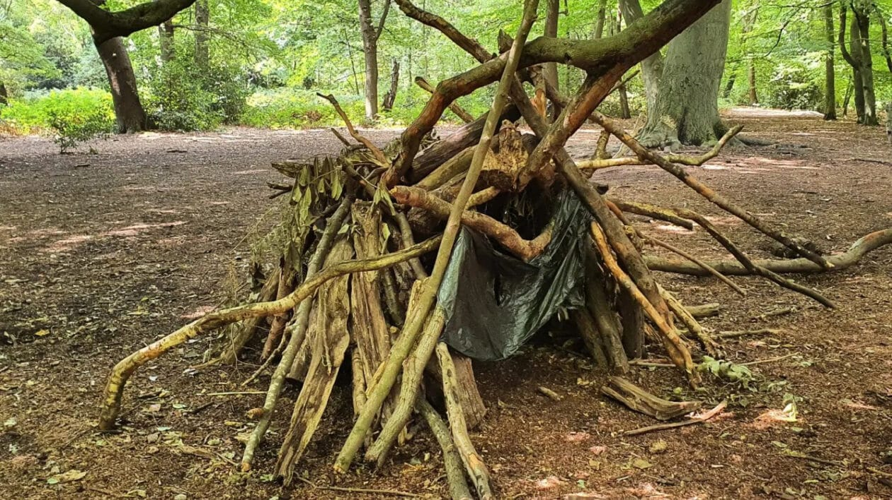
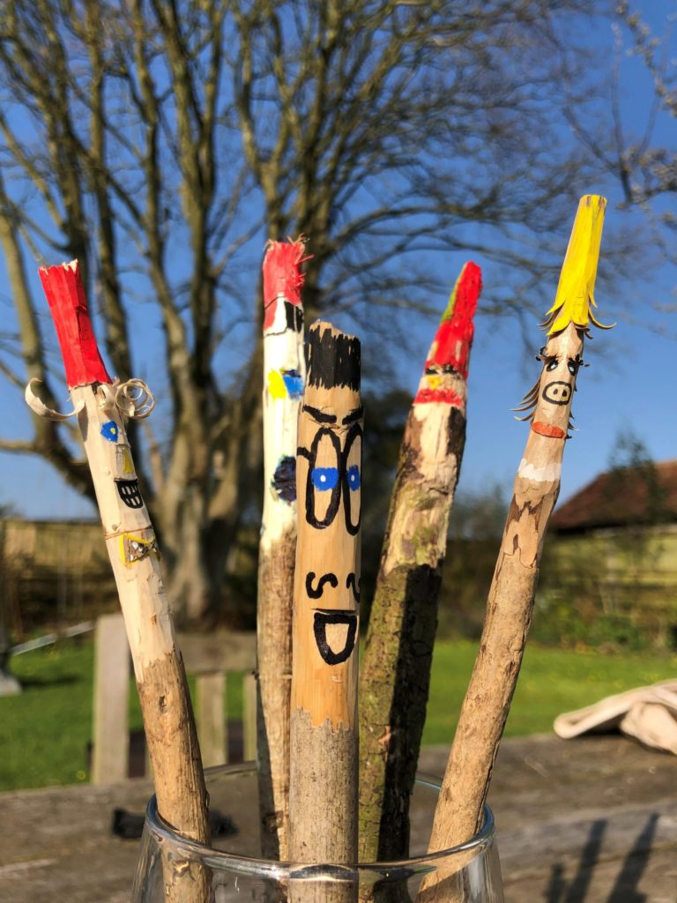

Meadow Pathways reconnects children with learning
Through trauma-informed, bespoke education and wellbeing support across Cornwall.
Reconnecting children with learning and life. Supporting individual growth through nurturing and understanding practices. We help children thrive through tailored trauma-informed educational approaches. 🌿✨
At Meadow Pathways, we recognise every young person is unique. We commit to working collaboratively with families, schools and partners to find meaningful, sustainable routes to success for each learner.


- 

- 
Our Approach
Our approach blends therapeutic practice and curriculum-linked activities to create meaningful learning opportunities. 🎨🍳🌲
Welcome to Meadow Pathways Cornwall
Meadow Pathways provides inclusive therapeutic education and wellbeing support for children and young people with SEND and SEMH needs. We combine tailored learning, therapeutic practice, and community-based activities to build confidence, skills, and a sense of belonging. 🌱
Our Values
- 💪🌱 Resilience & Independence – We nurture confidence, self-belief, and the ability to grow through challenge.
- 💪🧘♀️ Health & Wellbeing – We prioritise emotional safety, regulation, and holistic care in every setting.
- 🔎 Honesty & Integrity – We build trust through transparency, consistency, and ethical practice.
- 🤗 Friendship & Kindness – We foster connection, empathy, and belonging, because relationships are the heart of healing.
What We Offer
- 🧑🤝🧑 Mentoring and Advocacy – Building trust and self-belief through consistent relational support and Alternative Provisions.
- 📚 Tailored Learning Packages – Flexible academic pathways matched to each learner’s pace and interests.
- 🛠 Life Skills – Practical preparation for adulthood including functional skills and community engagement.
- 🧮 Diagnostic Assessments – Literacy and numeracy profiling to inform targeted intervention.
- 🧠 SEMH Interventions – Trauma informed strategies to support emotional regulation and resilience.
- 🎨 Wellbeing & PSHE – Creative therapeutic sessions that promote self awareness, relationships and personal growth.
- 🔄 Transitional Services – Carefully planned reintegration or onward pathways supported by multi agency collaboration.
- 🧠 Therapeutic & Curriculum Activities – Nature-based bush craft, walking, fitness, water-based activities, fishing, climbing, cooking, play, biking and more linked to ASDAN & AQA Unit Awards.
Next Steps
If you’d like to explore Meadow Pathways for a child or young person, you can check out:
If your enquiry is urgent or a safeguarding concern, please contact statutory services: ☎️ 01872 324605 - earlyhelphub@cornwall.gov.uk. Then call the Meadow Pathways team directly: ☎️ Contact (add our contact tab).
🤩 Planning Submitted..... For our first site 'Treverno Meadows' 🤩 Check out our page introducing Treverno Meadow, click tab above…………